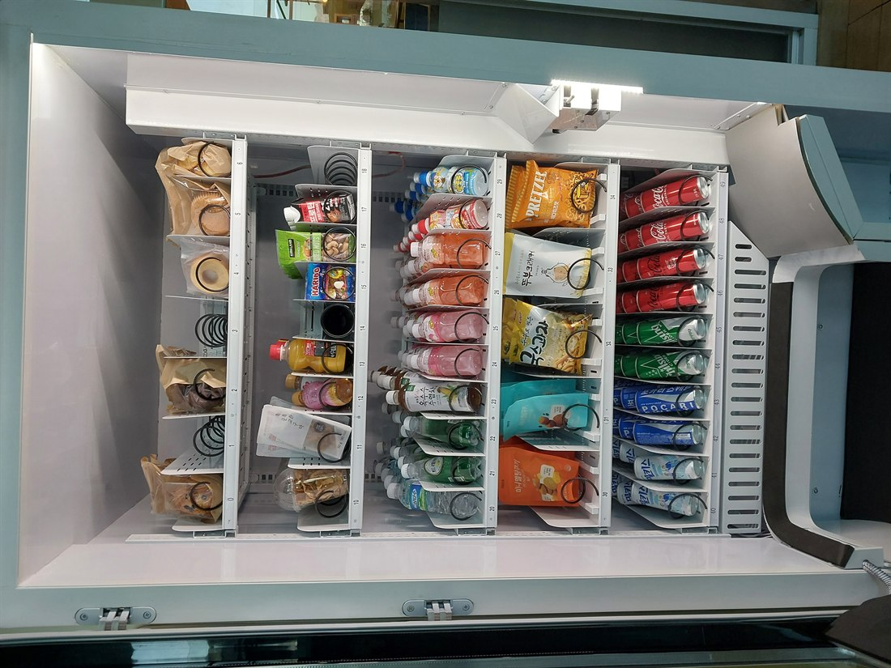

2026.08.20 · 파주
파주 스마트 무인자판기 설치 — 운정·헤이리 카페 매장 24시간 무인 판매

오늘은 파주의 한 카페 매장에 스마트 무인자판기를 설치했습니다. 손님이 많은 시간엔 카운터가 바쁘니, 음료·간식은 자판기로 돌려 24시간 무인 판매가 되도록 했습니다. 사진처럼 냉장 칸을 음료·스낵으로 꽉 채워, 화면에서 고르고 카드로 바로 결제하도록 세팅했습니다.
파주라 잘 맞는 자리 — 파주는 운정신도시·헤이리·프로방스·임진각·아울렛으로 유동이 넓습니다. 카페·관광지 매장에 무인 판매를 더하면 매출이 붙습니다.
파주에 설치한 스마트 자판기 구성
냉장자판기로 생수·이온음료·탄산·커피 음료를 시원하게, 과자·견과·간식을 함께 채웠습니다. 카드·삼성페이·카카오페이·네이버페이·QR을 모두 받아 현금 없이 운영되고, 매출·재고는 원격으로 확인됩니다. 화면형이라 대기 중 광고·안내(디지털 사이니지)도 띄울 수 있습니다.
파주, 이런 곳에 잘 됩니다
파주는 카페·베이커리, 헤이리·프로방스 관광상가, 아울렛, 스터디카페·학원, 출판단지 사무실, 펜션·글램핑까지 넓습니다. 카페 안 무인 판매, 관광지 상가, 사무실 휴게공간 문의가 많습니다.
파주 서비스 지역 (읍면동 방문)
운정, 금촌, 문산, 조리읍, 교하, 파주읍, 광탄면, 탄현면까지 파주 전역을 방문 설치합니다.
운정 무인자판기 설치 · 헤이리 스마트 자판기 설치 등
파주 무인사업, 이렇게 시작하세요
설치비는 무료입니다. 매장 안 미관·동선까지 보고 자리를 잡아 드리고, 반입·결제 연동까지 챙깁니다. 스마트 자판기 구입·구매도, 임대·렌탈도 가능합니다.
📞 파주 스마트 무인자판기 설치 상담 010-6832-1994